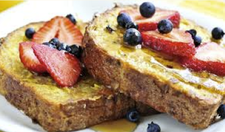

Torrada Francesa Doce
Ingredientes
2 Fatias de Pão
1 Ovo
500 ml de Leite
1 Xícara de Açúcar
Canela em Pó
Frutas(opcional)
Como fazer
Misture ovo,leite e açúcar.
Passe o Pão
Frite até dourar.
Sirva com Frutas e Mel(opcional).
Dica
Banana Combina Muito Bem
